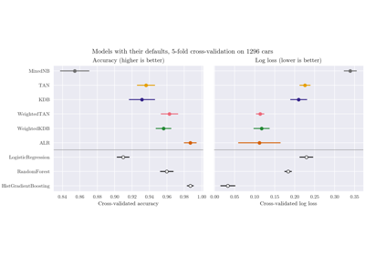
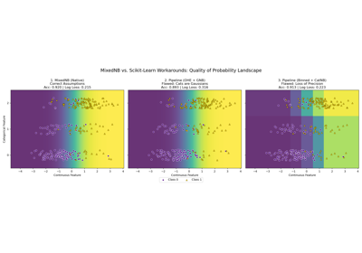
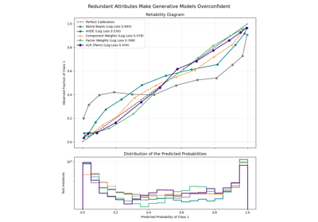
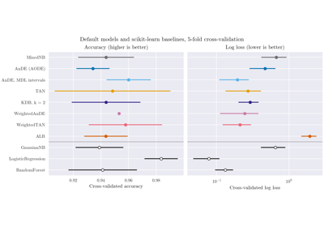

MixedNB#
- class skbn.MixedNB(categorical_features=None, bernoulli_features=None, gaussian_features=None, var_smoothing=1e-09, alpha=1.0, var_prior_weight=0.0)#
Mixed Naive Bayes classifier for heterogeneous data.
This classifier is designed to handle datasets with a mix of continuous (Gaussian), categorical, and binary (Bernoulli) features. It internally uses scikit-learn’s GaussianNB, CategoricalNB, and BernoulliNB on the respective feature subsets.
Features are classified and handled as follows:
User-defined: the constructor parameters fix the type of any feature. The three sets of features must be disjoint.
Labels: a pandas
categorycolumn (whatever its categories) and a column of strings (object or string dtype in a DataFrame, or a column of a NumPy object or string array) is categorical, unless declared Bernoulli; it cannot be declared Gaussian, and it is ignored when constant. Its labels are coded by their position among the sorted labels seen in training (for acategorycolumn too, whose order of categories is not used, and whose categories absent from the training rows get no estimate), so the model is the one fitted on these codes declared categorical. Such a column must hold labels inpredicttoo, and must not hold missing values (impute them first).Auto-detection: the remaining features are typed during
fit:Constant features carry no information and are ignored.
Features with exactly two unique values are Bernoulli.
Integer-valued features (integer dtype, or floats without fractional part) that are non-negative and have from 3 to
_MAX_AUTO_CATEGORIES(20) unique values are categorical.The rest (fractional or negative values, or integer values with more distinct values, such as ages or amounts) are Gaussian.
The detection only looks at the values, so declaring the types is the safe choice whenever they are known.
Categorical features may hold any numeric codes: they are label-encoded on the values seen in training, so a category is a value, not a position. A value never seen in training contributes nothing to the prediction, as a missing value would (the feature is marginalised for that sample).
Bernoulli features are binarised as
x > t, witht = 0(the convention ofBernoulliNB) when the training values lie on both sides of 0, and the midpoint of their range otherwise, so that a two-valued attribute such as {1, 2} keeps its two values apart.Gaussian features whose training variance is zero are ignored, since their density would be degenerate and the same for every class.
Read more in the User Guide.
- Parameters:
- categorical_featuresarray-like of int or bool, default=None
Indices (or a boolean mask) of the features to treat as categorical.
- bernoulli_featuresarray-like of int or bool, default=None
Indices (or a boolean mask) of the features to treat as Bernoulli.
- gaussian_featuresarray-like of int or bool, default=None
Indices (or a boolean mask) of the features to treat as Gaussian.
- var_smoothingfloat, default=1e-9
Non-negative portion of the largest variance of all Gaussian features that is added to variances for calculation stability. Passed to
GaussianNB.- alphafloat, default=1.0
Non-negative additive (Laplace/Lidstone) smoothing parameter. Passed to
CategoricalNBandBernoulliNB.- var_prior_weightfloat, default=0.0
Non-negative number of pseudo-observations used to shrink each class-conditional variance towards the pooled (class-independent) variance of the feature:
var_c = (n_c * var_c + nu * var_pooled) / (n_c + nu). It plays for Gaussian features the role thatalphaplays for discrete ones, preventing degenerate densities in classes with very few samples.0reproducesGaussianNBexactly.
- Attributes:
- classes_ndarray of shape (n_classes,)
Class labels known to the classifier.
- class_log_prior_ndarray of shape (n_classes,)
Log of the empirical frequency of each class.
- n_features_in_int
Number of features seen during fit.
- feature_names_in_ndarray of shape (
n_features_in_,) Names of features seen during fit. Defined only when
Xhas feature names that are all strings.- feature_types_dict
A dictionary mapping feature type (‘gaussian’, ‘categorical’, ‘bernoulli’) to the indices of the features of that type. Undeclared constant features and Gaussian features with zero variance are in none of the lists.
- estimators_dict
A dictionary containing the fitted Naive Bayes estimators for each feature type.
- categories_list of ndarray
Sorted training values of each categorical feature (its labels for a column of labels), in the order of
feature_types_["categorical"].- bernoulli_thresholds_ndarray of shape (n_bernoulli_features,)
Threshold
tthat binarises each Bernoulli feature asx > t.
See also
GaussianNBNaive Bayes classifier for Gaussian features.
CategoricalNBNaive Bayes classifier for categorical features.
BernoulliNBNaive Bayes classifier for multivariate Bernoulli models.
Examples
>>> import numpy as np >>> from skbn.mixed_nb import MixedNB >>> # Data: [Gaussian, Bernoulli, Categorical (3 cats)] >>> X = np.array([ ... [0.5, 0, 0], ... [-1.2, 1, 1], ... [0.6, 1, 2], ... [-0.1, 0, 0], ... [2.5, 1, 1], ... [-3.0, 0, 2] ... ]) >>> y = np.array([0, 1, 1, 0, 1, 0]) >>> clf = MixedNB() >>> clf.fit(X, y) MixedNB() >>> clf.predict([[-0.8, 1, 1]]) array([1])
Methods
fit(X, y)Fit the Mixed Naive Bayes classifier according to X, y.
Get metadata routing of this object.
get_params([deep])Get parameters for this estimator.
predict(X)Perform classification on an array of test vectors X.
Return log-probability estimates for the test vector X.
Return probability estimates for the test vector X.
score(X, y[, sample_weight])Return accuracy on provided data and labels.
set_params(**params)Set the parameters of this estimator.
set_score_request(*[, sample_weight])Configure whether metadata should be requested to be passed to the
scoremethod.- fit(X, y)#
Fit the Mixed Naive Bayes classifier according to X, y.
- Parameters:
- Xarray-like of shape (n_samples, n_features)
Training vectors, where n_samples is the number of samples and n_features is the number of features.
- yarray-like of shape (n_samples,)
Target values.
- Returns:
- selfobject
Returns the instance itself.
- get_metadata_routing()#
Get metadata routing of this object.
Please check User Guide on how the routing mechanism works.
- Returns:
- routingMetadataRequest
A
MetadataRequestencapsulating routing information.
- get_params(deep=True)#
Get parameters for this estimator.
- Parameters:
- deepbool, default=True
If True, will return the parameters for this estimator and contained subobjects that are estimators.
- Returns:
- paramsdict
Parameter names mapped to their values.
- predict(X)#
Perform classification on an array of test vectors X.
- Parameters:
- Xarray-like of shape (n_samples, n_features)
The input samples.
- Returns:
- Cndarray of shape (n_samples,)
Predicted target values for X.
- predict_log_proba(X)#
Return log-probability estimates for the test vector X.
- Parameters:
- Xarray-like of shape (n_samples, n_features)
The input samples.
- Returns:
- Carray-like of shape (n_samples, n_classes)
Returns the log-probability of the samples for each class.
- predict_proba(X)#
Return probability estimates for the test vector X.
- Parameters:
- Xarray-like of shape (n_samples, n_features)
The input samples.
- Returns:
- Carray-like of shape (n_samples, n_classes)
Returns the probability of the samples for each class.
- score(X, y, sample_weight=None)#
Return accuracy on provided data and labels.
In multi-label classification, this is the subset accuracy which is a harsh metric since you require for each sample that each label set be correctly predicted.
- Parameters:
- Xarray-like of shape (n_samples, n_features)
Test samples.
- yarray-like of shape (n_samples,) or (n_samples, n_outputs)
True labels for
X.- sample_weightarray-like of shape (n_samples,), default=None
Sample weights.
- Returns:
- scorefloat
Mean accuracy of
self.predict(X)w.r.t.y.
- set_params(**params)#
Set the parameters of this estimator.
The method works on simple estimators as well as on nested objects (such as
Pipeline). The latter have parameters of the form<component>__<parameter>so that it’s possible to update each component of a nested object.- Parameters:
- **paramsdict
Estimator parameters.
- Returns:
- selfestimator instance
Estimator instance.
- set_score_request(*, sample_weight: bool | None | str = '$UNCHANGED$') MixedNB#
Configure whether metadata should be requested to be passed to the
scoremethod.Note that this method is only relevant when this estimator is used as a sub-estimator within a meta-estimator and metadata routing is enabled with
enable_metadata_routing=True(seesklearn.set_config()). Please check the User Guide on how the routing mechanism works.The options for each parameter are:
True: metadata is requested, and passed toscoreif provided. The request is ignored if metadata is not provided.False: metadata is not requested and the meta-estimator will not pass it toscore.None: metadata is not requested, and the meta-estimator will raise an error if the user provides it.str: metadata should be passed to the meta-estimator with this given alias instead of the original name.
The default (
sklearn.utils.metadata_routing.UNCHANGED) retains the existing request. This allows you to change the request for some parameters and not others.Added in version 1.3.
- Parameters:
- sample_weightstr, True, False, or None, default=sklearn.utils.metadata_routing.UNCHANGED
Metadata routing for
sample_weightparameter inscore.
- Returns:
- selfobject
The updated object.
Examples using skbn.MixedNB#

Tutorial: from a table of labels to a fitted network

MixedNB on mixed continuous and categorical data

Calibration of generative and weighted models

A table of continuous measurements: what to expect